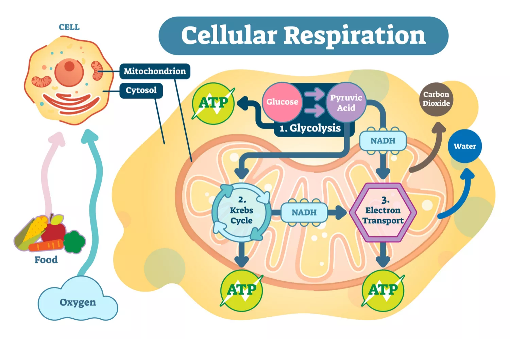
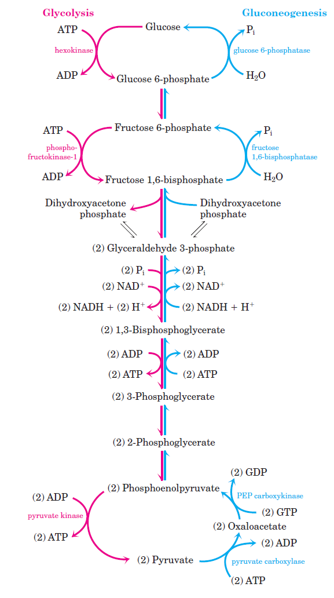
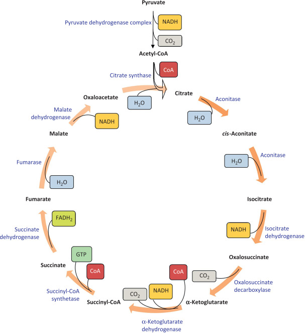
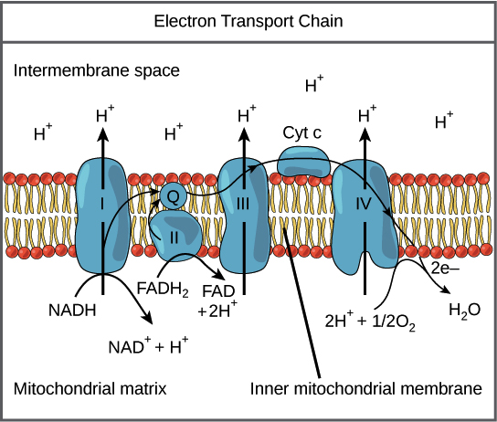

Cellular Respiration
Cellular respiration is the process by which cells convert nutrients into energy. This energy is used to power various cellular processes, including growth and repair.
The Process of Cellular Respiration
There are three main stages of cellular respiration: glycolysis, the citric acid cycle, and the electron transport chain. During glycolysis, glucose is broken down into two molecules of pyruvate. This process produces ATP and NADH.
The citric acid cycle, also known as the Krebs cycle, takes place in the mitochondria. During this stage, pyruvate is further broken down and more ATP and NADH are produced.
The final stage of cellular respiration is the electron transport chain. This stage takes place in the inner membrane of the mitochondria. During this stage, the energy from NADH and FADH2 is used to produce ATP.
